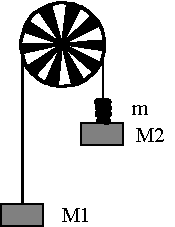

At undersøge en bevægelse med konstant acceleration og anvende og forstå Newtons 2. lov.
Fotogaten opspændes på bordkanten. To 50 grams lodder hænges op som vist på figuren. Desuden benyttes ca. 10 slutskiver á ca. 1 gram. Start med alle skiver på samme side, og flyt en slutskive ad gangen. Tilpas snorlængden, så det tunge lod når gulvet, før det lette lod når trissen. Hold fast i trissen og start Datalyse. Mål stedet som funktion af tiden. Differentier og bestem accelerationen vha. lineær regression.
Det er vigtigt at være omhyggelig med vejningen (0,001g).
| nr. | M1 / g | M2+m / g |
Dm /g |
amålt / m·s-2 |
| 1 | ||||
| 2 | ||||
| 3 | ||||
| ... |
Der udskrives en (t, s)-graf og en (t, v)-graf, og det vises, hvorledes accelerationen bestemmes.
Udregn masseforskellen Dm = M2 + m - M1.
Afbild den målte acceleration som funktion af masseforskellen.
Udregn også den teoretiske acceleration for hver belastning og indtegn den teoretiske acceleration i samme koordinatsystem som den målte acceleration. Funktion f(t) kan benyttes i Datalyse.
Ps:
Klip et hul i spændskiverne med en knibtang, så er de nemmere at flytte fra M2 til M1.
Bind en snor i M1 og M2, så snorens masse på de 2 sider udlignes. Den ekstra snor skal hele tiden kunne nå gulvet.
Kontroller, at trissens omkreds er 15,00 cm ved at trække M2 nedad, så trissen er kørt fx 5 gange rundt. Samtidigt måles forskydningen af M2 på en målestok.
Trissen får tilført en kinetisk energi i bevægelsen, derfor sættes den samlede masse til mres = M1 + M2 + m + 4,2 g ved udregning af den teoretiske acceleration. De 4,2 g svarer til trissens masse. Opskriv et udtryk for den teoretiske acceleration og indtegn den teoretiske acceleration som funktion af Dm i samme koordinatsystem som den målte.